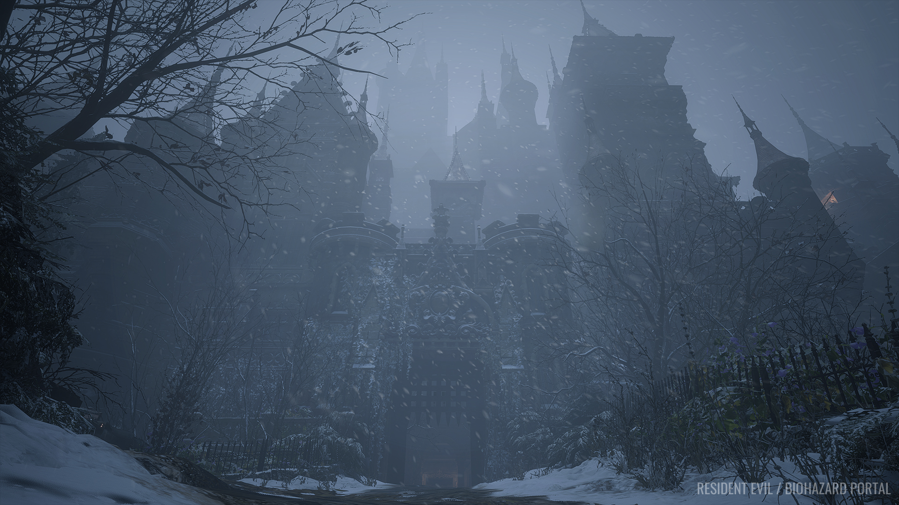
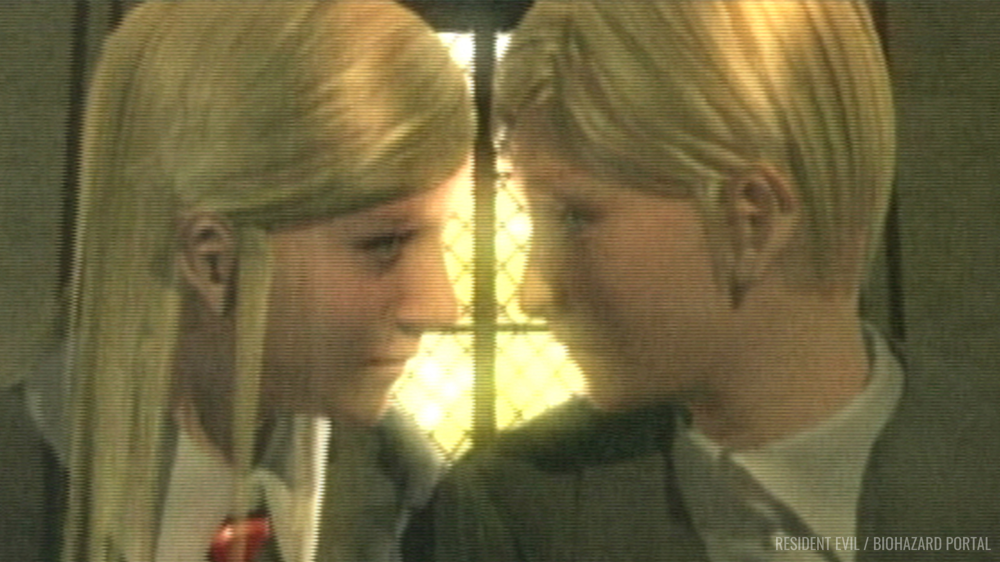
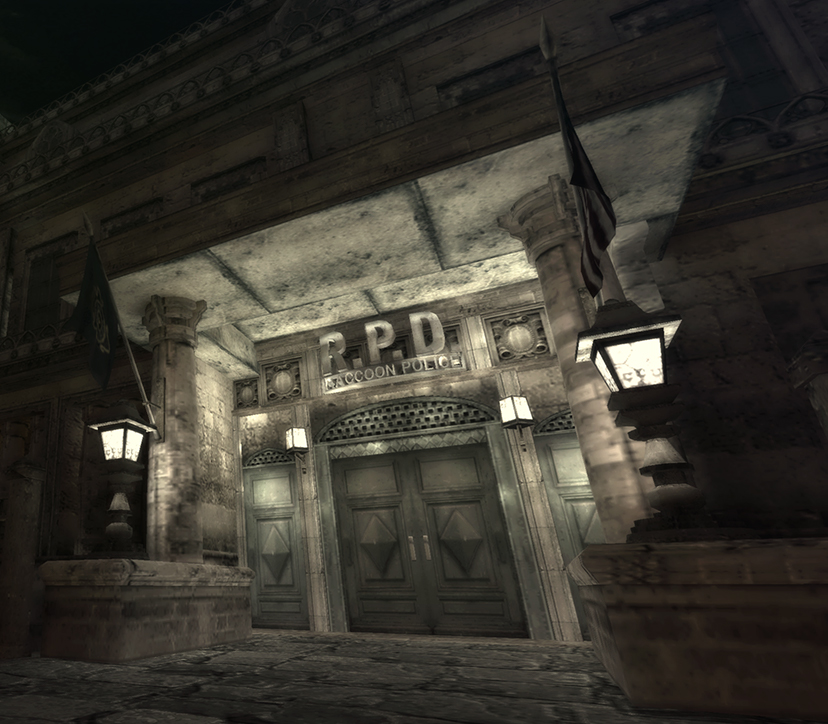
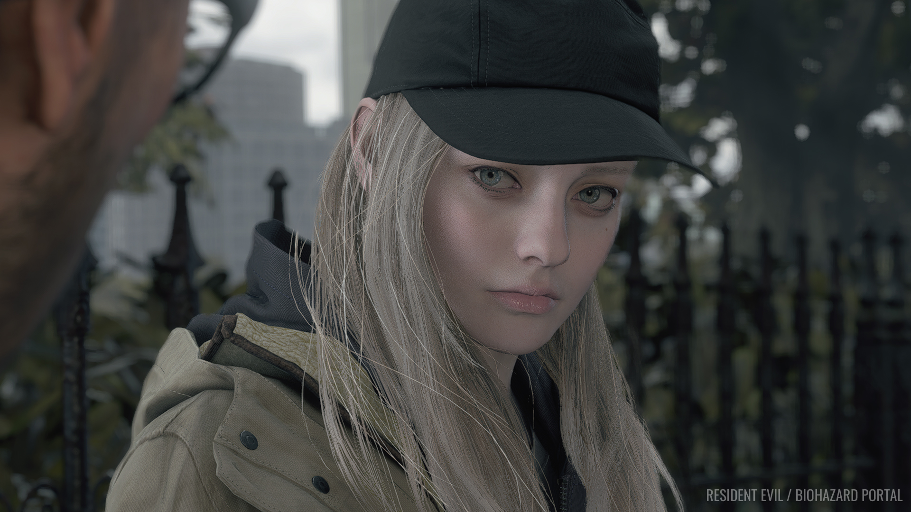

History of Resident Evil
In 1919 Mother Miranda's daughter Eva died of the Spanish flu. Distraught, she adventures into a cave within Romania and she is infected with mold causing her to become immortal. After finding the mold she does research on the people of the village between the years 1920s and 1990s she creates the 4 lords: Alcina Dimitrescu, Donna Beneviento, Salvatore Moreau, and Karl Heisenberg.
Around the 1950s and 1960s Ozwell E. Spencer is inspired by Mother Miranda's research and starts his own.
In the 1960s the progenitor virus was discovered by Edward Ashford, Ozwell E. Spencer and James Marcus within a rare flower called "Stairway of the Sun". Ashford wants to use it to cure paralysis but Spencer and Marcus intend it to be used in BOW research.
In 1962 Ozwell E. Spencer started construction of the Spencer mansion within the outskirts of Raccoon CIty which has hidden labs to start his biological weapon (BOW) research. In 1967 the construction was completed.
In 1968 Spencer, Marcus, and Ashford found the pharmaceutical company known as umbrella which is a front to continue their biological research. In July Ashford gets the progenitor virus and dies and his son, Alexander, is now the head of the Ashford family.
In 1969 Alexander constructed a facility in Antarctica which has an underground laboratory for the purpose of the project "CODE: Veronica". In 1971 the project was successful and the twins Alfred and Alexia were born.
In 1977 Albert Wesker and William Birkin joined a Training facility in Arkley Mountains of Raccoon City. In 1978 Marcus developed the T-Vuris using the progenitor virus and leech DNA. The training facility is closed and Wesker and Birkin transfer their T-virus research to the research facility.
In 1982 at the age of 11 Alexia injects her father, Alexander, with the T-Veronica Virus which causes his death. A year later she injects herself with the virus and enters a 15 year coma but is reported dead.
In 1988 Wesker killed Marcus under orders from Spencer. Umbrella begins work on the BOW tyrant "Nemesis".
In 1991 Birkin began the project "G-virus".
In 1993 Raccoon City Police Chief, Brain Irons, negotiated with Umbrella and in 1996 Raccoon City Police Department founded S.T.A.R.S. team with Wesker as the captain.
In 1998 May there was a large viral leak at the Arkley Mountains and the two S.T.A.R.S. groups investigate. The first one is killed by BOW's. The lab was destroyed and 5 members of S.T.A.R.S. survive. Survivors are Chris Redfield, Jill Valentine, Barry Burton, Brad Vickers, and Rebecca Chambers. Wesker escapes the Mansion before it is destroyed.
In August Chris (who is no longer with S.T.A.R.S.) finds out about the G-virus and heads to Europe to investigate Umbrella.
In September the virus spreads because of infected mice. Birkin finishes his G-virus research. U.B.C.S. (Umbrella Biohazard Countermeasure Service) starts rescue operations. Leon S. Kennedy, a rookie cop late on his first day and Claire Redfield, who is looking for her brother Chris both arrive in Raccoon. Nemesis is released into the city to look for Jill (who is no longer with S.T.A.R.S.). Leon and Claire both escape with William and Annette Birkin's daughter, Sherry.
In October The U.S. government destroyed Raccoon City with a missile strike.
In December Claire infiltrates the umbrella paris laboratory and is captured and imprisoned on Rockfort Island. Wesker releases the T-virus on the island and all inmates are set free. Claire emails Leon for help and her location is made known to Chris. Chris arrives on Rockfort Island and finds Wesker. Alexia wakes up, Alfred dies and Claire and Chris defeat Alexia.
In 2002 Jack Krauser, the man who trained Leon, faked his death and joined Wesker's secret organization. And 2 years later Umbrella is shut down and the U.S. president's daughter, Ashley Graham, is kidnapped by Los Illuminados, a religious cult. Leon is ordered to find her. He does and they escape.
In 2005 Jill and Chris return to the Spencer mansion and witness Wesker murder Spencer. Jill sacrifices herself to take down Wesker and save Chris. 4 years later Chris finds out that Jill is still alive but has been manipulated by Wesker. Chris kills Wesker in a Volcano.
In 2014 Mother Miranda gave The Connections samples of the mold they created a BOW named Eveline. Mia Winter's is ordered to transport Eveline but Eveline infects her and traps at the Baker House in Dulvey, Louisiana. 3 years later Eveline sends Ethan Winters, Mia's husband, an email from Mia. He goes looking for her and ends up being killed by Jack Baker. He is still alive due to the mold and gets the vaccine for Mia. They both got rescued by Chris.
In 2021 Ethan, Mia, and their newborn Rosemary are now living in Europe. Mia and Rose are both kidnapped by Mother Miranda Ethan goes looking for them and in the process defeats the 4 lords. Once he finds Rose he has to sacrifice himself to save her and destroy the mold. Chris rescues Mia and Rose.
In 2037 Rose grew up getting bullied for her powers (she got from her father being mold) and in search to get rid of them she enters the consciousness of the Megamycete (power of the mold). This takes her to the memories of the past in Romanian. She ends up meeting her late father and she is able to say goodbye. She ends up embracing her powers.



